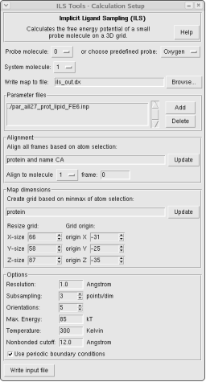

This is a graphical user interface for setting up Implicit Ligand Sampling
(ILS) calculations using VMD's volmap ils command. For more
information about the ILS method please refer to the documentation in
the VMD user guide:
http://www.ks.uiuc.edu/Research/vmd/current/ug/node141.html
See also:
Cohen, J., A. Arkhipov, R. Braun and K. Schulten, "Imaging the
migration pathways for O2, CO, NO, and Xe inside myoglobin",
Biophysical Journal 91:1844-1857 (2006)
Choosing a probe molecule
You can specify one of the loaded molecules in VMD as the probe in
which case you have to set the radius and occupancy manually to the
VDW radius and well depth epsilon respectively for each
atom. Alternatively you can choose one of the predefined probes from
the list.
Choosing a system molecule
Pick the molecular system in which you want to perform the ILS
calulation from the list of loaded VMD molecules.
Parameter files
Specify the CHARMM Parameter files you used for the MD simulation.
Aligning frames
At the beginning of the calculation all frames will be align. Specify
the atom selection on which the alignment will be based.
Map dimensions
The position and size of the resulting volumetric map.
Other input options
See documentation of the volmap ils command.